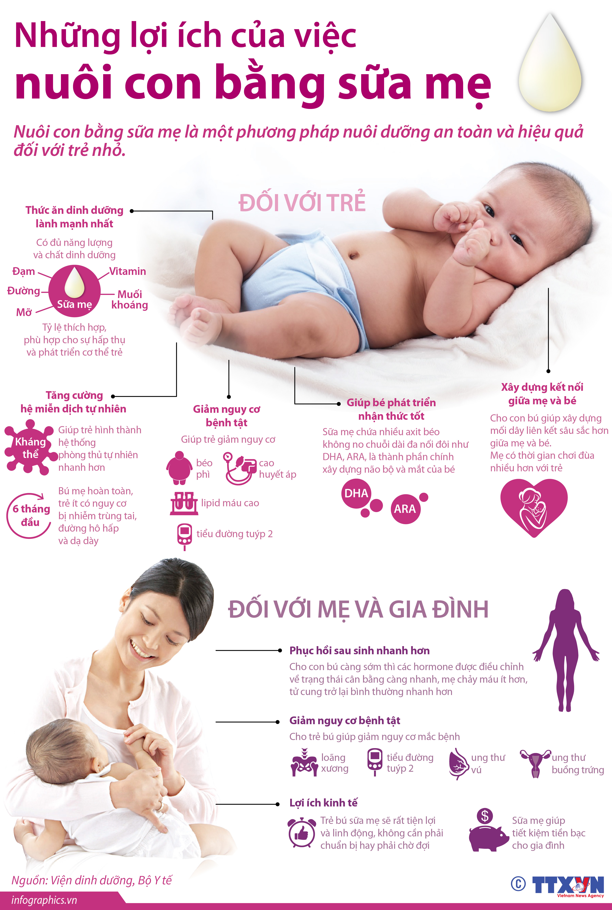

Bài truyền thông Hưởng ứng Tuần lễ Thế giới Nuôi con bằng sữa mẹ năm 2026
Kính thưa quý vị và các bạn!
Thực hiện hưởng ứng Tuần lễ Thế giới Nuôi con bằng sữa mẹ năm 2026 với chủ đề "Khởi đầu bền vững: Phát huy những thực hành tốt sẵn có", xã Tây Khánh Vĩnh đẩy mạnh công tác truyền thông nhằm nâng cao nhận thức của các cấp, các ngành, các tổ chức, gia đình và cộng đồng về vai trò, ý nghĩa của việc nuôi con bằng sữa mẹ đối với sự phát triển toàn diện của trẻ em.

Sữa mẹ là nguồn dinh dưỡng tự nhiên hoàn hảo, cung cấp đầy đủ các chất dinh dưỡng thiết yếu giúp trẻ phát triển khỏe mạnh cả về thể chất lẫn trí tuệ. Đồng thời, sữa mẹ còn chứa nhiều kháng thể quý giá, được ví như "vắc-xin tự nhiên", giúp tăng cường sức đề kháng, phòng chống nhiều bệnh nhiễm khuẩn, giảm nguy cơ suy dinh dưỡng và góp phần bảo vệ sức khỏe lâu dài cho trẻ.Các chuyên gia y tế khuyến cáo, trẻ cần được bú mẹ trong vòng một giờ đầu sau sinh, được bú mẹ hoàn toàn trong 6 tháng đầu đời và tiếp tục bú mẹ đến 24 tháng tuổi hoặc lâu hơn, kết hợp với chế độ ăn dặm hợp lý. Việc nuôi con bằng sữa mẹ không chỉ mang lại lợi ích cho trẻ mà còn giúp người mẹ phục hồi sức khỏe sau sinh, giảm nguy cơ mắc một số bệnh mạn tính, đồng thời tăng cường sự gắn kết tình cảm giữa mẹ và con.
Thưa bà con!
Nuôi con bằng sữa mẹ còn là giải pháp dinh dưỡng hiệu quả, tiết kiệm và bền vững. Việc duy trì nuôi con bằng sữa mẹ giúp giảm chi phí chăm sóc sức khỏe, giảm gánh nặng kinh tế cho gia đình, góp phần bảo vệ môi trường và hướng tới sự phát triển bền vững của cộng đồng.
Để việc nuôi con bằng sữa mẹ đạt hiệu quả, rất cần sự chung tay của toàn xã hội. Các cấp, các ngành, các cơ quan, đơn vị, doanh nghiệp, tổ chức đoàn thể và mỗi gia đình cần tạo điều kiện thuận lợi, bảo đảm quyền lợi thai sản, hỗ trợ các bà mẹ mang thai và nuôi con nhỏ, xây dựng môi trường thân thiện để người mẹ có thể nuôi con bằng sữa mẹ thành công.
Hưởng ứng Tuần lễ Thế giới Nuôi con bằng sữa mẹ năm 2026, xã Tây Khánh Vĩnh kêu gọi mỗi người dân hãy cùng lan tỏa thông điệp về lợi ích của việc nuôi con bằng sữa mẹ; quan tâm, động viên và hỗ trợ các bà mẹ thực hiện nuôi con bằng sữa mẹ đúng cách, góp phần nâng cao chất lượng dân số, xây dựng những thế hệ trẻ em khỏe mạnh, thông minh và phát triển toàn diện. Một số thông điệp truyền thông hưởng ứng Tuần lễ Thế giới Nuôi con bằng sữa mẹ năm 2026:
Chung tay hỗ trợ nuôi con bằng sữa mẹ - Nguồn dinh dưỡng và "vắc-xin tự nhiên" hoàn hảo cho trẻ.
Nuôi con bằng sữa mẹ sớm từ khi sinh để trẻ phát triển toàn diện.
Các cấp, các ngành chung sức hỗ trợ người mẹ nuôi con bằng sữa mẹ thành công.
Nuôi con bằng sữa mẹ - Giải pháp dinh dưỡng hiệu quả, tiết kiệm và bền vững cho tương lai.
Hỗ trợ nuôi con bằng sữa mẹ là trách nhiệm của toàn xã hội.
Đảm bảo sinh kế và bảo vệ thai sản để duy trì nguồn sữa mẹ.
Hưởng ứng Tuần lễ Thế giới Nuôi con bằng sữa mẹ năm 2026 với chủ đề: "Khởi đầu bền vững: Phát huy những thực hành tốt sẵn có".
Vì một thế hệ tương lai khỏe mạnh, hãy cùng chung tay bảo vệ, khuyến khích và hỗ trợ nuôi con bằng sữa mẹ ngay từ hôm nay.
Xin trân trọng cảm ơn.
Source : ChiLeNguyen - Trạm y tế Tây Khánh Vĩnh - Tỉnh Khánh Hoà
Nguồn tham khảo